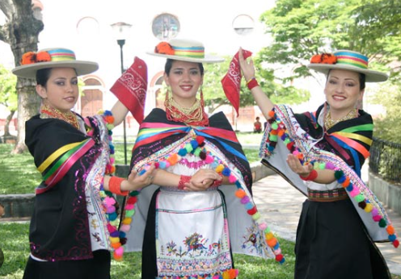
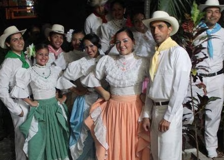
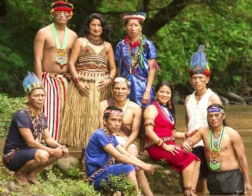
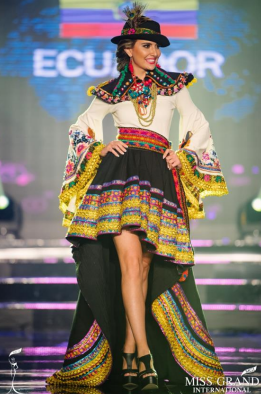
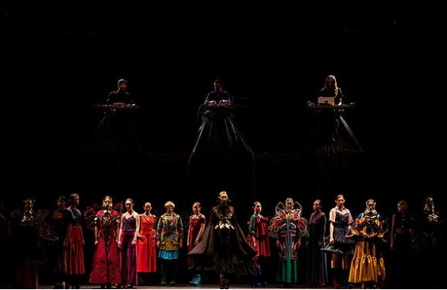

Discover our traditional clothing
There are several types of clothing in Ecuador, but some can be mentioned by regions which each one shows its essence and how it differs from the others:
The clothing of the natabuelas are mainly the blouse that are typically embroidered with motifs phytomorphs such as flowers, also their medium puffed sleeves, black anacos and espadrilles of this same color, wear a white hat that used to be made made of pressed sheep's wool, they also wear a scarf that is placed on the shoulder or on the head and finally the accessories like the necklaces.
Here we can see the clothing of the montubios this is made up of a blouse with flights these know how to be adorned with patterns of flowers, also make up a long and large skirt who use them for typical dances, also carry as an accessory a turban.
The clothing of the Amazon is made up of a blue dress that usually used by the shoulder left, they also use accessories that are made by the Tagua seed by hand, they use them as necklaces, bracelets, and earrings.
These clothes are typical so much that they are inspiration for various catwalks and which always take into account shapes, colors and what they represent, here we can see a design made for Miss Grand Ecuador:
Also an Ecuadorian designer, who in her latest collection RESPIRAR made designs referring to the aesthetics of Ecuadorian indigenous clothing, which represents a lot to Ecuador, some are made by hand, the designer is called Lía Padilla.
